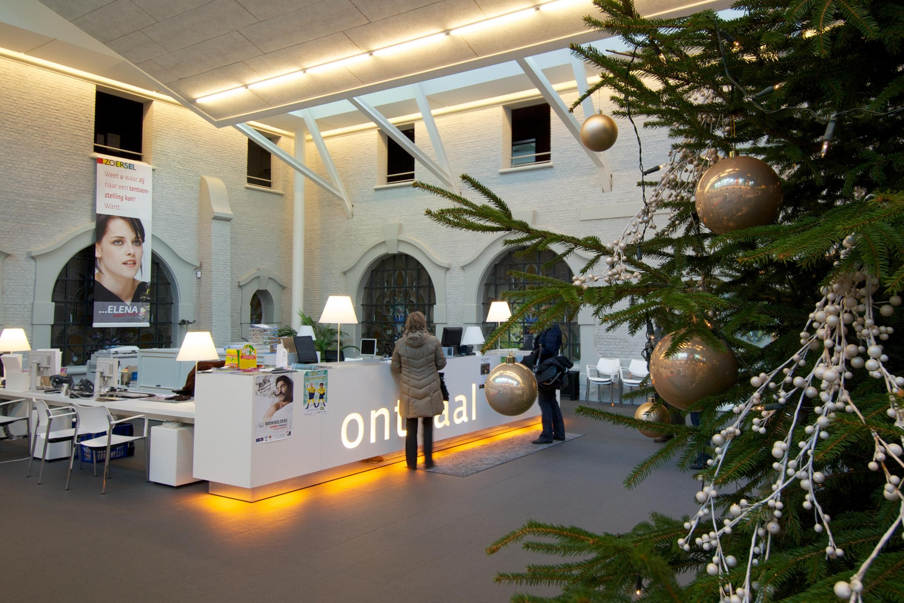

Dag 2: dinsdag
vergadering
Vandaag had ik een halve dag inplaats van een volledige en morgen zal ik dan wel een volledige dag hebben inplaats van een halve. Deze dag begon net zoals gisteren om half negen. Het eerste half uur heb nog kunnen werken aan mijn website en uitleg gekregen over de huisstijl dat ze gebruiken bij de gemeente Zoersel. Na nog even aan mijn website te werken zijn wij naar de gemeente malle gegaan om daar een vergaderingte volgen. Deze vergadering heeft geduurd tot de middag. Na de vergadering gingen we terug naar de gemeente Zoersel en zat mijn dag er op voor vandaag.
